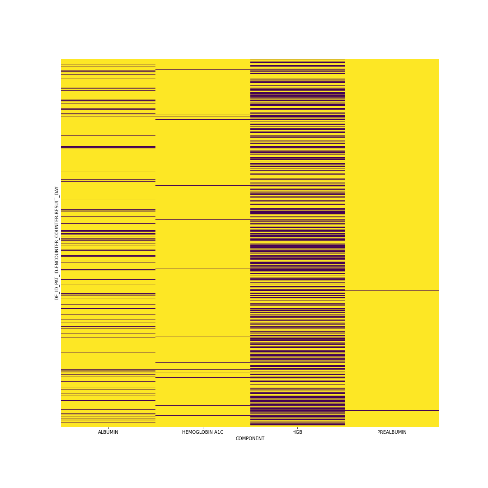
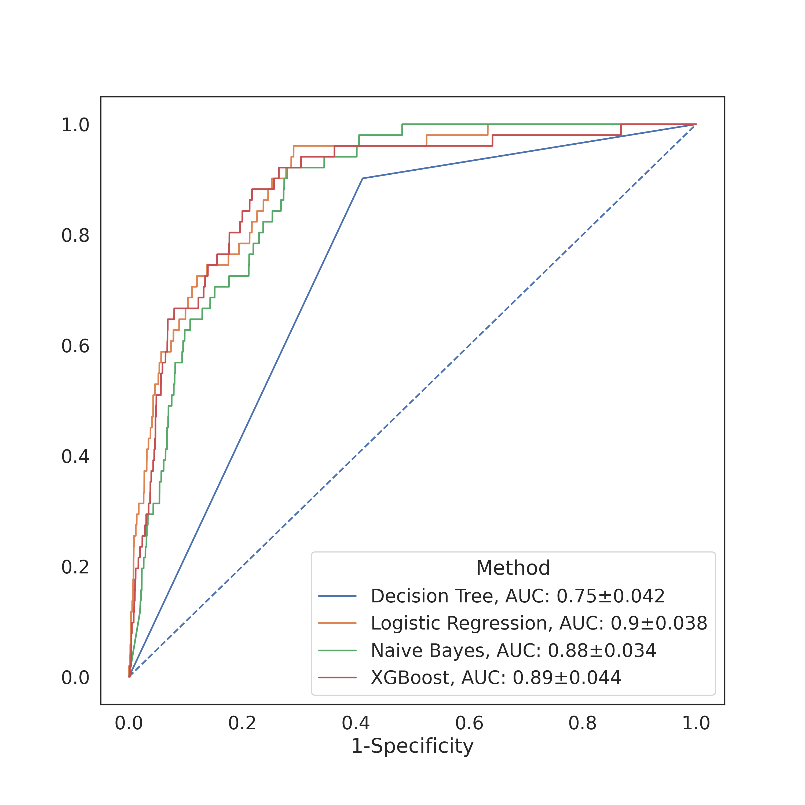

Predicting HAPI Occurrence
Abstract
Hospital acquired pressure injuries (HAPI) pose a significant risk to the health of patients and are costly for hospitals. Furthermore, they are avoidable with proper proactive care. At the moment, hospitals rely primarily on nurses to prevent HAPI from developing. Among other tools, they utilize the Braden Scale to help identify high risk patients requiring special attention. Previous studies have explored machine learning as a way to assist in the prediction of pressure injuries in order to help identify high risk patients. This project builds off those studies by incorporating time-stamped lab tests. We hypothesized that how HGB, Albumin, etc. levels change over time could predict the occurrence of a pressure injury. No significant results were achieved.
Source code is here. All code was ran on Dartmouth’s high performance cluster, and select files were copied over with all references to the data removed.
2 Introduction
Pressure injuries, also commonly called pressure ulcers or bedsores, describe the tissue damage caused by prolonged pressure against one’s body. They occur primarily in people that cannot move themselves around easily. Hospital acquired pressure injuries (HAPI) have particular costs. HAPIs coincide with prolonged hospital stays and worse health outcomes. Patients that acquire a HAPI on average stay longer and require being readmitted more often; they are also more likely to die while in the hospital (Gaspar et al. (2019)). Traditionally, it is thought that all HAPI are avoidable, so hospitals devote extensive resources towards ensuring HAPIs do not occur in the first place (Lyder et al. (2012)).
The current method for preventing HAPI relies on identifying patients of high risk, and applying more focused strategies with them that are too expensive to be applied broadly. One commonly employed method is the Braden Scale, which is a chart that nurses fill out regularly that estimates their risk based on certain common risk factors such as low mobility or higher levels of moisture. This is not a perfect solution, and some are unsure if this scale is effective at all (Lyder et al. (2012)).
A highly accurate predictor would be incredibly valuable, so naturally many papers have come out that examine predictors made with a wide range of machine learning methods (Levy et al. (2022), Walther et al. (2022), Song et al. (2021), Kaewprag et al. (2017)). These papers incorporate a wide range of features and they use a wide range of techniques, but generally decision tree based models seem to be the most effective. All of them used time-invariant data. Šín et al. (2022) incorporates time-variant data using the MIMIC IV dataset, but they average that data across an entire week, and it is not a significant focus of their research. My next research focused on looking at how to incorporate the time-variant data.
The biggest complication I needed to deal with was the extreme missingness of my dataset (which I will expand on in the methods section). I was directed towards imputation, and Wells et al. (2013) suggested a method MICE, but ultimately the paper that influenced me the most was by Che et al. (2018). They developed a variant of a GRU (gated recurrent network) that incorporated a decay term. GRUs are structurally very similar to LSTMs, and they both are optimized to deal with the vanishing gradient problem that arises with RNNs when data sequences get long. Other papers such as this one by Andjelkovic et al. (2022) also suggested to me that I should implement a GRU.
3 Values Statement
Hospital acquired pressure injuries are a serious health risk to patients, and they are a financial burden on hospitals. Hospitals would surely use a tool that could accurately predict who is likely to develop pressure injuries, and patients would benefit. Hospitals would spend less money on programs to prevent pressure injuries, and they would spend less money taking care of patients that acquire them. Patients would be less likely to develop a pressure injury. The incorporation of time-variant data into our model would also mean that more timely care could be provided.
Nurses’ jobs could in theory be made easier by a tool that automatically monitors everyone’s likelihood to develop a pressure injury, but in reality they would still need to just as vigilant as they usually are. All of the training data we have comes from patients who had all of the relevant resources dedicated to them. Nurses prevent far more pressure injuries than our algorithm knows about, so it is not trained to create accurate predictions for everyone. It is only trained to predict high risk for patients that developed a pressure injury in spite of focused care. One can imagine a scenario where a model produced on our training data would assess an extremely high risk patient as a low risk patient because nurses would know to be vigilant with turning and taking care of that patient.
Another reason that a model created on my dataset should only be ever used in addition to the preventative methods employed currently is that my model is trained data from central New Hampshire. This means that non-white patients constitute a small fraction of the dataset, so it would be difficult to ensure that a model behaves similarly across people that are different from the average person from in and around Lebanon, New Hampshire.
Despite those two possible downsides, I still believe a model that can assist in identifying patients that are likely to slip through the cracks of the preventative care measures would be overall beneficial. Those using it would need to stay ensure that they never defer to it, and I think it would need to be heavily emphasized as a tool to help identify high risk patients that were otherwise likely to be assessed as low risk, rather than as a generalized risk assessor. As long as that is the case, I think, if my project worked, that it would contribute to a healthier and more equitable hospital.
4 Materials and Methods
The Dataset
The dataset I used came from Dartmouth-Hitchcock hospital in Lebanon, New Hampshire. It contained data from 133,024 patient encounters from 82,033 unique patients from 2011 to 2021. We also had the ICD-10 codes that we were able to use to determine if a patient had developed a pressure injury in the hospital. The dataset has many different time-invariant and time-variant features. For this project I focused on the time-variant feature of lab test results.
As mentioned in the previous section, this dataset comes from a place with very little racial diversity. Of the 82,033 unique patients, nearly over 79,000 were white alone.Given the incredibly low HAPI incidence rate, it would be essentially impossible to determine whether our model is equally accurate for all races. Of the 251 patients we determined to have developed HAPI, only two races were represented and 246 of them were white.
The data that I focused on for this project was the lab test data. Each row of this dataset contained the following info:
- The deidentified patient ID
- The patient encounter
- The type of test ordered
- The day the test was ordered
- The day and time the test was collected
- The day and time the results came back
- The value of the test results
This dataset does contain sensitive health information, and deanonymization is theoretically possible, so I am being very careful with the information that I display. I was required to take multiple online courses on data security and HIPAA violations before I could access data like this. This data will never be broadly available, and I need to ensure to keep it that way.
My Approach
Before I got into my advanced lab test testing, I wanted to ensure that the data could be used to predict HAPI by implementing something relatively basic. The first thing I did was steal some code and whip up a basic classifier using all of the data available to me. For this I wanted each sample to be a 1D array, so I could not have any data that changed over time. In order to still incorporate it, for the time-variant data I took the min, mean, and max values as features. I had done most of this processing before officially starting on this project, so I will not expand on it too much here. I then used scikit-learn’s IterativeImputer on the basic features and mean imputation on the more missing features. I then trained simple logistic regression, decision tree, naive bayes, and XGBoost models using scikit-learn’s GridSearchCV.
After that basic test gave decent enough results, I was confident enough to begin with the real work incorporating the time-variant data. I started by just using lab tests to see if I could create a predictor that was better than random chance. I originally planned for this to be a simple precursor test to determine if using lab tests conferred any predictive advantage.
Formatting the lab test data resulted in significant complications. What I ended up doing was similar to Šín et al. (2022). I averaged the test results for each test across each day. Most days most patients did not get every test, so most of the days had NaN instead of any value. All of these NaN’s required imputation. I also chose to limit my sequence lengths to only the first ten days of tests, and I only used the four tests that had the most values recorded. After removing patients with incorrect or insufficient data, I was left with a tensor containing 105,255 patients with 4 tests each and 10 values per test. Below is a figure showing the missingness; each yellow line is a value that is missing. From Che et al. (2018) I saw that mean imputation could still be highly effective, so that was the technique I chose (while planning to try more in the future).

Once I had a tensor with no missing values, I attempted to use torch to train a GRU model. I used a simple GRU layer into a fully connected layer. I chose binary cross entropy as my loss function due to the extreme class imbalance of my dataset, and I chose Adam as my optimizer. I did not get significantly past this point, and I will expand on why in the following section. I did not implement any cross validation or hyperparameter tuning techniques, nor did perform any audits of my result.
5 Results

For the more basic models I implemented as a check, I got relatively decent accuracies (as measured by the AUC). The figure above contains the AUCs of the four models I tested, with the best accuracies coming from the naive Bayes and logistic regression classifiers. I did not perform any specificity or sensitivity tests, but based on the crosstab I can rest assured in knowing that they were pretty bad. My results were close enough to Levy et al. (2022) that I felt confident enough to proceed.
I was not able to get my GRU model to return any meaningful predictions. At first I simply believed this was a problem I could fix by messing around with parameters, increasing the number of epochs, changing the batch size, etc., but ultimately I realized that it actually just was not working properly. Despite spending a significant time reviewing the docs and reimplementing the model I was not able to find the source of my error. At the suggestion of Prof. Chodrow, I simplified my model down to linear regression and generated some far simplified fake data that somewhat resembled my dataset in an attempt to eliminate all possible sources of error. This led me to discover that the torch Sequential I had wrapped around my model somehow interacted with the BCELoss in such a way as to cause the optimizer to turn all of my model weights to NaN. I am still unsure if this is the only error I was having, as even though my weights are no longer all becoming null, they do not appear to be improving when I train.
6 Concluding Discussion
Ultimately, my project fell definitively into the “partial success” category. I was only able to implement some of the vectorization techniques, and I barely tested out a few models. I certainly did not train any models that can match up to others that have been developed. At the very least, I did significantly advance my knowledge of everything that I implemented. My understanding of processing data and of GRUs expanded greatly due to this project. My failings were so insurmountable that I had to learn extra about everything I was doing to ensure that each individual step was not the main source of the problem.
I will still continue to work on this project, so I view the time I spent working as time more than well spent. It is all part of the slow progress I am making towards a fantastic result down the line. If I find conclusively that my hypothesis (that lab test data can help predict HAPI) is completely inaccurate, then I will consider that a job well done. In the short future I will iron out my errors and I will know more than ever before.
7 Group Contributions Statement
Since this was a solo project, I do not have much to say about the contributions of any other group members.
8 Personal Reflection
I somewhat touched on this in my concluding discussion, but I believe that I learned a great deal. Despite my ultimate (albeit hopefully temporary) shortcoming, I think my understanding of the machine learning pipeline expanded greatly throughout this project. I am still of course disappointed that I got caught for so long on something so little, but I find solace in the fact that it made me take the time to really learn the process in and out while I was looking for the source of my error. I feel that my understanding of GRUs and really RNNs in general is considerably greater than when I started. I also feel that I had really good experience with data processing, and that my work in this domain was notably more fluid and natural than in my previous work. I will carry these skills quite literally into tomorrow when I continue to work on this project in preparation for my regularly scheduled meeting with my advisor.